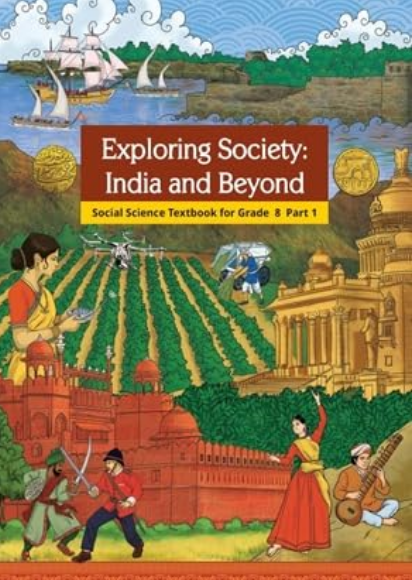

NCERT Solutions

“Exploring Society: India and Beyond” is the new NCERT Social Science textbook for Class 8. Developed in accordance with the National Education Policy (NEP) 2020 and guided by the National Curriculum Framework for School Education (NCF-SE) 2023, the book presents Social Science through an integrated and multidisciplinary approach.
Instead of studying History, Geography, Civics and Economics as completely separate areas, the textbook helps students understand how these disciplines are connected. It explores India's natural resources, geographical and political changes, historical developments, democratic institutions and economic life, helping learners understand how society has evolved and how different forces shape the India of today.
| No. | Chapter | Major Area |
|---|---|---|
| 1 | Natural Resources and Their Use | Geography |
| 2 | Reshaping India’s Political Map | History and Geography |
| 3 | The Rise of the Marathas | History |
| 4 | The Colonial Era in India | History |
| 5 | Universal Franchise and India’s Electoral System | Civics and Democracy |
| 6 | The Parliamentary System: Legislature and Executive | Civics and Governance |
| 7 | Factors of Production | Economics |
The textbook encourages students to look at Social Science as the study of people, places, institutions, resources and historical processes and the relationships among them. Students are encouraged to examine evidence, interpret information, understand different perspectives and connect classroom learning with contemporary society.
This approach is particularly important in Class 8 because students begin to develop a broader understanding of how India's geographical conditions, historical experiences, political institutions and economic activities influence one another.
Exploring Society: India and Beyond helps students develop a broader understanding of India and its society. It moves beyond learning isolated historical dates, geographical facts or definitions and encourages students to understand relationships, processes and their wider significance.
The book also lays an important foundation for higher-level Social Science by developing skills such as critical thinking, interpretation, map reading, historical understanding, civic awareness and basic economic reasoning.
| Details | Information |
|---|---|
| Book | Exploring Society: India and Beyond |
| Class | 8 |
| Subject | Social Science |
| Publisher | NCERT |
| Part | Part I |
| Academic Session | 2026–27 |
| Chapters in Part I | 7 |
| Major Areas | Geography, History, Civics and Economics |
| Medium | English |
Exploring Society: India and Beyond is the NCERT Social Science textbook for Class 8. It presents Social Science through an integrated approach covering History, Geography, Civics and Economics.
Yes. It is the new NCERT Social Science textbook introduced as part of the updated school curriculum for Class 8.
The textbook is published by the National Council of Educational Research and Training (NCERT).
The book integrates four major areas of Social Science: History, Geography, Civics and Economics.
Part I contains 7 chapters, covering important themes related to India's resources, history, political institutions, democracy and economic activities.
The first chapter is “Natural Resources and Their Use.” It introduces students to natural resources and their importance in human life and society.
Yes. The book covers important developments in Indian history, including the rise of the Marathas and the colonial period.
Yes. Geography is an important component of the textbook. Students learn about natural resources and the relationship between people, land and resources.
Yes. It introduces students to important concepts related to universal franchise, elections, Parliament, the Legislature, the Executive and India's democratic system.
Yes. The book introduces fundamental economic concepts, including the factors of production and their role in economic activities.
The main objective is to help students understand society through interconnected perspectives of History, Geography, Civics and Economics while developing critical thinking, analytical skills and civic awareness.
No. The textbook follows an integrated approach in which different areas of Social Science are connected to help students understand relationships between people, places, institutions, resources and historical developments.
Chapter 2 is “Reshaping India’s Political Map.” It explores important changes in India's political and geographical landscape.
Chapter 3, “The Rise of the Marathas,” deals with an important period in Indian history and examines the emergence and development of Maratha power.
The chapter “The Colonial Era in India” examines important aspects of India's colonial history and the developments that shaped the country's subsequent historical trajectory.
The book introduces students to universal franchise and India's electoral system, helping them understand the importance of elections and democratic participation.
Yes. It includes concepts related to the Parliamentary System, Legislature and Executive, helping students understand how India's democratic government functions.
Factors of production are the essential resources and inputs used to produce goods and services. The textbook introduces students to this basic economic concept and its role in economic activity.
Yes. The integrated approach encourages students to analyse information, understand different perspectives, make connections between events and develop reasoned conclusions.
Yes. Students should carefully study the textbook, understand important concepts, practise questions, revise key facts and develop the ability to explain historical, geographical, civic and economic ideas clearly.
Students should read each chapter carefully, understand the concepts and events, study maps and illustrations where provided, make concise revision notes and practise both factual and analytical questions.
Yes. Maps can be an important learning tool in Geography and History. Students should understand locations and geographical relationships instead of simply memorising place names.
Important dates, names and events should be learned, but students should also understand their context, causes, consequences and historical significance.
Yes. Its coverage of elections, universal franchise, Parliament, the Legislature and the Executive helps students develop a basic understanding of democratic institutions and responsible citizenship.
Yes. Students can use chapter-wise solutions, notes, important questions, explanations, revision material and practice questions based specifically on the NCERT textbook.
Useful resources include NCERT solutions, chapter-wise notes, important questions, map-based practice, worksheets, revision notes, source-based questions and competency-based practice.
The current textbook is associated with the updated 2026–27 academic session.
Yes. It is the NCERT Social Science textbook intended for Class 8 students following the applicable CBSE and NCERT curriculum.